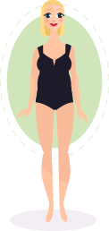
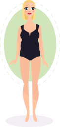

Consultora en nutrición
Selección de un plan de dieta
¡Hola! Me llamo SofÃa y soy nutricionista profesional.

Contesta a unas pocas preguntas para que pueda decirte cuál es tu peso ideal y lo fácil que es alcanzarlo.
Consultora en nutrición
Consultora en nutrición
Selección de un plan de dieta
¡Hola! Me llamo SofÃa y soy nutricionista profesional.
Contesta a unas pocas preguntas para que pueda decirte cuál es tu peso ideal y lo fácil que es alcanzarlo.
¡Hola! Me llamo SofÃa y soy nutricionista profesional. He desarrollado un sistema único para adelgazar y quiero compartirlo contigo. Contesta a unas pocas preguntas para que pueda decirte cuál es tu peso ideal, diseñar un plan de alimentación saludable y la frecuencia de cargas fÃsicas. ¿Empezamos?
¿Cómo puedo dirigirme a ti? Introduce tu nombre
Eres: Hombre Mujer
Según las estadÃsticas, los hombres comienzan a engordar después de los 33 años. ¿Qué edad tienes tú? Introduce tu edad
Según las estadÃsticas, las mujeres comienzan a engordar después de los 33 años. ¿Qué edad tienes tú? Introduce tu edad
Y tu altura. ¡SÃ, sÃ! ¡Me interesa todo sobre ti!  Introduce tu altura en centÃmetros
Introduce tu altura en centÃmetros
cm. ¡Aceptado! , ¿con qué frecuencia te pesas? ¿Cuánto mostraba la báscula la última vez? Introduce tu peso en kilos
Creo que ya lo he adivinado, pero tengo que aclararlo un poco. Indica tu tipo de figura.
 

¡Eso pensé! , ¿sabÃas que con el tipo de figura que tienes no deberÃas ponerte a dieta? El peso perdido durante la inanición regresa en un mes. Espero que no seas una fan de las dietas… Lo he probado un par de veces A veces me pongo a dieta Me pongo a dieta varias veces al mes Estoy a dieta ahora 
A ver... ¿Y qué hay de la actividad fÃsica? ¿Vas al gimnasio? No, paso mucho tiempo sentada y me muevo poco Intento caminar más, pero no siempre Hago ejercicio y corro por la mañana Voy al gimnasio varias veces a la semana
La verdad es que los deportes no garantizan la pérdida de peso. Los ejercicios fÃsicos fortalecerán los músculos, pero no quemarán mucha grasa. Lo que puede afectar al peso es el fondo hormonal. , ¿cómo te sientes durante la menstruación? Como mucho y me siento muy irritada Quiero quedarme en casa y no ir a ningún lado Me siento como de costumbre ¿QUÉÉÉ?
La verdad es que los deportes no garantizan la pérdida de peso. Los ejercicios fÃsicos fortalecerán los músculos, pero no quemarán mucha grasa. Lo que puede afectar al peso es el fondo hormonal. ¿Sientes que estás engordando con la edad? SÃ, cada año gano un par de kilos SolÃa ​​estar gorda Me cuesta bajar de peso No cambio con la edad


¡Ya estamos en la lÃnea de meta! Un par de preguntas más. ¿En qué foto me veo mejor?:) 
SÃ, me hice nutricionista para ponerme en forma, asà que sé todo sobre la pérdida de peso. Con la ayuda de mi sistema me deshice de 37 kg. , ¿cuántos kilos te gustarÃa perder? Introduce el número en kilos
Genial. Ahora dame unos segundos... 
¡Hecho! En base a tus datos, tengo un par de consejos para ti.
, ¿recuerdas lo que te dije sobre las dietas? ¡Las dietas y el hambre no conducen a nada bueno! ¡Tienes que comer sà o sÃ! Un cambio brusco en el comportamiento alimentario en general puede llevar a un desequilibrio hormonal... 
El gimnasio ayudará a mantener tu forma, pero no ayudará a perder peso.
Y, lo más importante - ¡el agua es más importante que la comida! Durante el dÃa debes beber al menos tres vasos de lÃquido. El primero - por la mañana con el estómago vacÃo, el segundo - para el almuerzo y, el tercero - por la noche, antes de acostarte. Pero hay un secreto.

Para perder rápidamente esos kilos de más tienes que tomar con un vasode agua una cápsula de Fortunella .Son mi gran hallazgo.
las cápsulas Fortunella es un suplemento especial que ayuda a perder peso. Reduce el apetito y comienza el proceso de quema de grasa.
El extracto de la fruta Fortunella, el cardamomo, el extracto de aceite de cilantro, la L-carnitina, las vitaminas (A, B1-B6, B12, C, D) y los minerales (magnesio, calcio, zinc, manganeso, etc.) que forman parte de la composición de las cápsulas Fortunella aceleran el metabolismo y comienzan a luchar con depósitos de grasa tan pronto como ingresan al cuerpo. Gracias a esto, la pérdida de peso será rápida e inofensiva.
Si has llegado al final, obtienes un 50% de descuento siguiendo este enlace.
¡Buena suerte! ¡Pierde peso con cabeza! PEDIR AHORA
¿SabÃas que la falta de sueño en los hombres ralentiza bruscamente el metabolismo? ¿Cuántas horas al dÃa duermes habitualmente? Introduce el número de horas
, con un régimen de sueño asà es muy importante comer bien. Un hombre con tu peso necesita consumir al menos 2500 calorÃas al dÃa. ¿De qué productos suele consistir tu dieta? Carne, ¡mucha carne grasosa y deliciosa! No pienso en eso. Como lo que pillo Intento comer bien, consumir menos comida grasa y dulce

A ver... ¿Y qué hay de la actividad fÃsica? ¿Vas al gimnasio?  No, paso mucho tiempo sentado y me muevo poco Intento caminar más, pero no siempre Hago ejercicio y corro por la mañana Voy al gimnasio varias veces a la semana
No, paso mucho tiempo sentado y me muevo poco Intento caminar más, pero no siempre Hago ejercicio y corro por la mañana Voy al gimnasio varias veces a la semana

La verdad es que los deportes no garantizan la pérdida de peso. Los ejercicios fÃsicos fortalecerán los músculos, pero no quemarán mucha grasa. Lo que sà ayudará a poner tu cuerpo en forma rápidamente es el sexo regular debido a una liberación adicional de hormonas;)
, ¿con qué frecuencia practicas el sexo?  Todos los dÃas, soy una bestia en la cama Varias veces a la semana Varias veces al mes Forever alone
Todos los dÃas, soy una bestia en la cama Varias veces a la semana Varias veces al mes Forever alone 
¡Ya estamos en la lÃnea de meta! Un par de preguntas más. ¿A cuál de estas dos chicas invitarÃas a una cita?:)
Ambas fotos son mÃas. SÃ, me hice nutricionista para ponerme en forma, asà que sé todo sobre la pérdida de peso. Con la ayuda de mi sistema me deshice de 37 kg. Dime una cosa, ¿cuántos kilos te gustarÃa perder? Introduce el número en kilos
Genial. Ahora dame unos segundos...
¡Hecho! En base a tus datos, tengo un par de consejos para ti.
, ¿recuerdas lo que te dije sobre la alimentación? ¡Las dietas y el hambre no conducen a nada bueno! ¡Un hombre tiene que comer sà o sÃ! Un cambio brusco en el comportamiento alimentario en general puede llevar a un desequilibrio hormonal y a problemas con la potencia sexual... ¿Quieres comenzar a perder peso? Practica el sexo más a menudo.
El gimnasio ayudará a mantener tu forma, pero no ayudará a perder peso.
Y, lo más importante - ¡el agua es más importante que la comida! Durante el dÃa debes beber al menos tres vasos de lÃquido. El primero - por la mañana con el estómago vacÃo, el segundo - para el almuerzo y, el tercero - por la noche, antes de acostarte. Pero hay un secreto.
Para perder rápidamente esos kilos de más tienes que tomar con un vaso de agua una cápsula de Fortunella . Son mi gran hallazgo.
las cápsulas Fortunella es un suplemento especial que ayuda a perder peso. Reduce el apetito y comienza el proceso de quema de grasa.
El extracto de la fruta Fortunella, el cardamomo, el extracto de aceite de cilantro, la L-carnitina, las vitaminas (A, B1-B6, B12, C, D) y los minerales (magnesio, calcio, zinc, manganeso, etc.) que forman parte de la composición de las cápsulas Fortunella aceleran el metabolismo y comienzan a luchar con depósitos de grasa tan pronto como ingresan al cuerpo. Gracias a esto, la pérdida de peso será rápida e inofensiva.
Si has llegado al final, obtienes un 50% de descuento siguiendo este enlace.
¡Buena suerte! ¡Pierde peso con placer! PEDIR AHORA
¿Estas ah� ¡Este guaperas y yo estamos esperando tu respuesta!
¡Renée Zellweger pudo perder 15 kg! ¡Tú también podrás hacerlo! 
¡Zach Galifianakis pudo perder 18 kg! ¡Tú también podrás hacerlo! 

¿Estás ah� ¡Este bellezón y yo estamos esperando tu respuesta! 
Venga ya, no te creo:)
No lo creo:)
Seamos honestos:)
Creo que estás bromeando
Selecciona una opción
Escribe un mensaje...


¡Me alegro de haberte ayudado!
¡Lo conseguirás!
¡Adiós!